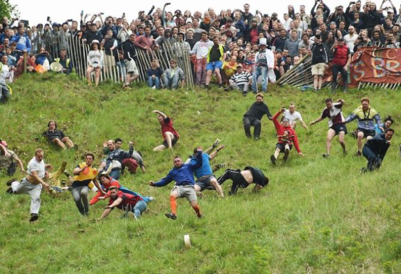

O Cooper's Hill Cheese-Rolling and Wake é uma competição tradicional realizada anualmente na colina de Cooper's Hill, em Gloucestershire, Inglaterra. O funcionamento do evento é simples e direto: um mestre de cerimônias libera um queijo Double Gloucester circular de aproximadamente 3 kg do topo de uma ladeira extremamente íngreme. Um segundo após o queijo começar a descer, os competidores iniciam a descida. Como o queijo pode atingir velocidades superiores a 100 km/h, o objetivo prático é ser a primeira pessoa a cruzar a linha de chegada na base da colina para ser declarada vencedora.
O evento consiste em várias corridas separadas, incluindo categorias masculinas e femininas, reunindo dezenas de participantes de diversas partes do mundo. Não há um número fixo de "jogadores", pois a participação é aberta a voluntários que buscam vivenciar essa tradição centenária, cujos registros formais remontam a 1826. A regra principal é respeitar o sinal de partida e completar o percurso até a base. O vencedor de cada rodada recebe como prêmio o próprio queijo utilizado na corrida. Milhares de espectadores se reúnem anualmente para observar a competição e celebrar este aspecto único da cultura local britânica.
